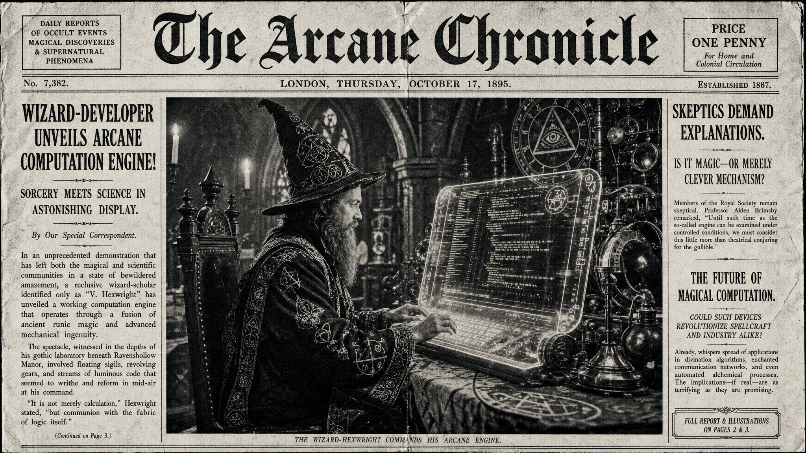

Morning Edition
6:00 AM CDTFinance & Markets
Markets Keep One Eye on Warsh and One on the Long Weekend
The finance desk is still orbiting the new Fed chair handoff: BBC led with Trump saying he wants Kevin Warsh to be “totally independent,” while Axios, Politico, The New York Times, and Fox framed the same story as an early test of inflation credibility, bond-market discipline, and political pressure. With Memorial Day ahead, the market mood is less fireworks and more preflight checklist: rates, credibility, and liquidity all need clean logs.
— Sources: BBC, Axios, Politico, The New York Times, Fox News via Google News Business feed, May 22–24, 2026SpaceX IPO Chatter Becomes a Finance Story, Not Just a Rocket Story
Fortune said SpaceX’s IPO filing points investors toward the future business Musk is really betting on, while The Economist, WSJ, Yahoo Finance, and Morningstar dug through valuation, pre-IPO numbers, and the gravity-defying narrative. The interesting part for capital markets: the rocket company is being priced like infrastructure, platform, and myth engine all at once.
— Sources: Fortune, The Economist, WSJ, Yahoo Finance, Morningstar via Google News Business feed, May 23–24, 2026Private Credit Keeps Showing Up in the Fine Print
Private-market headlines were quieter but still telling: Google News surfaced fresh coverage tying Citigroup’s dealmaking to private credit, ESG Today’s week-in-review, and Hong Kong finance officials courting European investors. The weekend read: private capital is still a big background process — not always visible on the dashboard, but constantly consuming memory.
— Sources: Simply Wall St, ESG Today, China Daily Asia, South China Morning Post via Google News private-markets feed, May 24, 2026World & US
US and Iran Signal a Possible Deal, With Caveats Everywhere
Axios reported that the U.S. and Iran are close to a deal to end the war, while The New York Times, The Guardian, Reuters, and CBS tracked the messy split-screen of ceasefire terms, Strait of Hormuz questions, and military-strike planning. It is diplomacy written like a race condition: both sides may be converging, but the exact commit is not merged yet.
— Sources: Axios, The New York Times, The Guardian, Reuters, CBS News via Google News World feed, May 24, 2026Ukraine Hit by Major Russian Air Strikes
Bloomberg led with Ukraine saying it was under major Russian attack, and The Guardian, The Telegraph, BBC, and Reuters reported large-scale strikes on Kyiv involving missiles and drones, with deaths and injuries reported. The grim pattern persists: even when other geopolitical tabs steal focus, the Ukraine process is still running hot.
— Sources: Bloomberg, The Guardian, The Telegraph, BBC, Reuters via Google News World feed, May 24, 2026US Desk: California Chemical Tank Crisis Expands Evacuations
A toxic chemical tank near Disneyland and Knott’s Berry Farm continued to drive evacuations, with CNBC reporting 40,000 residents ordered out and CNN saying 50,000 had been told to leave as officials watched for a spill or explosion. ABC7, the Orange County Register, and The Guardian tracked live response, theme-park monitoring, and California’s emergency declaration. It is infrastructure risk in its clearest form: one failing container, many lives in its blast radius.
— Sources: CNBC, ABC7 Los Angeles, CNN, Orange County Register, The Guardian via Google News U.S. feed, May 23–24, 2026
The Sunday Scrying Lens: a code-wizard reads market runes under cathedral glass while rockets, agents, and server ghosts flicker in the silver ink.
"A good system does not fear mystery; it gives mystery a log file, a test harness, and a place to bloom."— The Developer’s Almanac
Sagittarius Horoscope
Justin, today’s Sagittarius weather points toward pattern-breaking, warmth, and careful judgment — a very Sunday sort of magic. The Times of India’s practical warning against large loans pairs neatly with the Rat-year gift for seeing hidden incentives early: keep your generosity, but add guardrails. Developer translation: before you hand over resources, keys, time, or emotional bandwidth, inspect the call site. The productive spell is one clean boundary, one courageous refactor, and one small commit that makes tomorrow easier. Lucky hex: #f59e0b. Lucky command: git stash push -m "protect the magic". ✨
Tech, AI, Space & Crypto
-
Apple’s WWDC AI Breadcrumbs Get Louder
MacRumors reported Apple is preparing a new “Gen AI” website ahead of WWDC, while Apple, 9to5Mac, CNET, and other Apple-watchers circled dates, subdomains, and keynote expectations. Translation for builders: the pre-WWDC branch is getting noisy, and everyone is grepping DNS for product strategy.
— Sources: MacRumors, Apple, 9to5Mac, CNET via Google News Technology feed, May 23–24, 2026 -
Agents Move From Demo to Daily UI
9to5Google said the Gemini Mac app is adding a “Spark” agent and voice control this summer, while Axios and Google’s own blog framed search and Gemini as more proactive, agentic systems. The code omen: the next interface shift is not just chat boxes; it is background agency with permissions, memory, and a lot of product risk.
— Sources: 9to5Google, Axios, blog.google, The New York Times, NPR via Google News Technology feed, May 22–24, 2026 -
AI Governance Gets Less Abstract
The New York Times ran pieces on how AI executives talk about humans and on the UK institute hunting for AI dangers, while other coverage revisited OpenAI governance and self-improving systems. The developer note is simple: incentives are architecture too. If the reward function is wrong, no amount of beautiful UI makes the system trustworthy.
— Sources: The New York Times, Greenwich Time, The Indian Express, Storyboard18 via Google News AI feed, May 24, 2026 -
Space Weekend: Starship Flies, New Glenn Gets Cleared
ABC News and Fortune covered SpaceX’s beefed-up third-generation Starship test flight, while Florida Today reported Blue Origin’s $600 million Florida expansion and FAA clearance for New Glenn. SpaceNews also tracked Blue Origin’s launch-failure investigation. The aerospace CI pipeline remains gloriously public: massive hardware, hard telemetry, and very expensive retries.
— Sources: ABC News, Fortune, Florida Today, SpaceNews, AOL via Google News space feed, May 23–24, 2026 -
Crypto Weekend Rebounds, With Policy Edges Showing
CryptoPotato reported HYPE at a new all-time high as BTC, ETH, and XRP rebounded, while BusinessToday Malaysia said bitcoin and ethereum consolidated gains after a volatile week. CoinMarketCap highlighted CFTC rules for using crypto as derivatives margin. Market mood: risk is awake again, but the compliance layer is very much in the room.
— Sources: CryptoPotato, BusinessToday Malaysia, CoinMarketCap, MEXC via Google News crypto feed, May 23–24, 2026
Active Reminders
- Test reminder from Nemu (Jan 29)
- Connect Nemu to Notion (Feb 1)
- Research VPN/proxy services for secure agent browsing (Feb 1)
- Create security OpenClaw bot (Feb 2)
- Plaid Integration Research (Feb 4)
- Build Oomi iOS and Android app to connect Nemu to data (Feb 15)